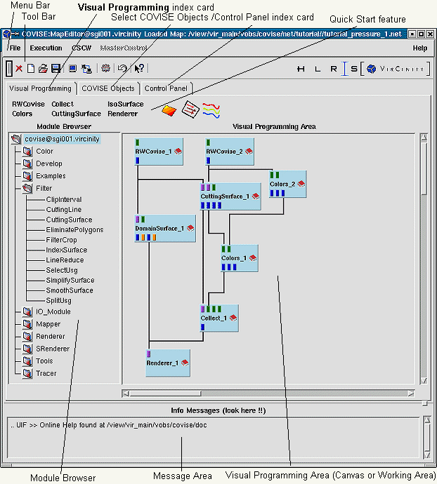

|  |
| Map Editor - Visual Programming index card (default) |
COVISE normally starts with the Visual Programming index card, and most functions of the Map Editor are provided to work with it.
The MapEditor Menu Bar provides functions to
Using the Module Browser you
build or update a map out of modules in the working area, see also
module selection (ModuleBrowser)
module grouping (ModuleGroup)
module icon layout (ModuleIcon)
connecting ports (ModulePorts and ConnectingModules)
working with modules (Working with Modules)